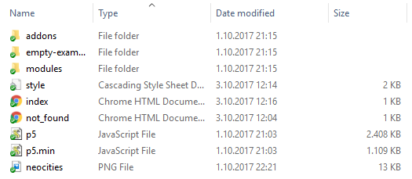

P0: Halló Heimur
-Uppsetning á heimasíðu fyrir p5 verkefni
Vefsíðumappan
- Búið til ykkar síðu á neocities
- Breytið síðunni aðeins eftir eigin smekk.
- Hlaðið síðunni niður og setjið í möppu á góðum stað. Í þessari möppu muntu vinna öll næstu verkefni. Ég mæli með því að allir hafi þessa möppu í skýjinu, með því að nota dropbox, onedrive eða hvað sem þeim hentar.
- Sækið p5 með því að velja p5.js complete á p5 síðunni
- Setjið pakkann beint inn í vefsíðumöppuna ykkar. Hún ætti þá að innihalda þetta: 
Að leysa p5 verkefni
Það er mikilvægt að halda skipulega um verkefnin sín og skrárnar. Fylgið þessu verkeferli þegar þið leysið verkefni. Þetta er mjög mikilvægt, því t.d. erum við að vinna með margar skrár sem hafa sama nafnið og ef þær fara ekki í réttar möppur gætum við verið að eyða verkefnum sem við unnum áður.- Vertu með góðan ritil á tölvunni. Það er hægt að nota t.d. notepad, alls ekki word. En best er að sækja ritil sérhannaðan fyrir kóðun. T.d. Sublime Text 2, Brackets, Atom eða OpenProcessing.
- Vertu með góðan vafra. Það er svosem sjálfsagt að þið séuð með slíkan, en ég vil bara benda á að það skiptir máli. Ég mun nota google chrome og mun sýna dæmi hvernig við gerum það sem við gerum í honum.
- Breyttu nafninu á empty-example í vefsíðumöppunni þinni í P0-HalloHeimur
- Í möppunni eru tvær skrár. index.html skránni þarftu eiginlega aldrei að breyta. sketch.js skráin er forritið þitt. Opnaðu báðar skrárnar í einhverjum góðum ritli.
- Settu þennan kóða í sketch.js og vistaðu skjalið.
- Opnaðu index.html í vafra. Þá sérðu forritið keyrast.
- Athugaðu að íslenskir stafir líklega ekki koma ekki rétt út á síðunni, þetta er einfalt að laga. Opnaðu index.html í ritlinum og bættu línunni
<meta charset="UTF-8">
í head hlut kóðans. Vistaðu skjalið. - Refresh-aðu index.html í vafranum. Nú ættu íslensku stafirnir að sjást almennilega.
- Skoðaðu kóðann í sketch.js. Gerðu tilraunir með að breyta honum. Geturðu breytt litunum? Fært hringinn og textann til eins og þú vilt? Gerðu tilraunir með þetta.
Að fylgjast með villum
- Prófaðu að bæta þessum skipunum á eftir hinum í sketch.js skrána þína:
rect(200,200,10)
ellise(100,200,50,50); - Skoðaðu núna síðuna í varfranum, hvað gerist?
- Þegar við forritum verðum við að passa okkur á villum. Það er algengt og eðlilegt að upp komi villur. En hvernig finnum við þær til þess að geta leyst þær? Við notum vafrann.
- Í Chrome notum við það sem kallast Web Developers Tools. Opnaðu þessi tól með því að hægrismella á síðuna í vafranum og velja inspect. Eða ýta á
Ctrl + Shift + I - Skoðaðu villumeldingarnar sem koma. Lagaðu sketch skjalið svo kóðinn geri það sem var væntanlega ætlast til.
- Athugaðu að við fáum ekki villumeldingu um tvennt hér. Ekki fyrir að sleppa því að enda skipun á ; sem við verðum almennt að gera. Og ekki heldur um að skipunin fyrir rétthyrning er rangt notuð og enginn rétthyrningur er teiknaður.
- Rect skipunin á að taka inn fjórar tölur, ekki þrjár. Bættu við fjórðu tölunni og athugaðu hvort þú getir ekki teiknað þannig rétthyrning.
- Breyttu litum, stærðum og staðsetningum að vild, gerðu tilraunir með kóðann þar til þú telur þig skilja vel grunnatriðin.
Að uppfæra neocities
- Allar breytingar sem þú gerir á vefsíðuni mæli ég með að þú gerir bara í vefsíðumöppunni.
- Settu hlekk á verkefnið þitt á forsíðuna þína. Slóðin ætti að vera einhvernvegin svona:
<a href="P0-HalloHeimur/index.html">P0: Halló Heimur</a>
- Seinna þegar þú leysir ný önnur verkefni, skaltu afrita P0-HalloHeimur möppuna þína, í vefsíðumöppunni, endurnefna, og vinna í sketch.js skránni.
- Þegar kemur að því að uppfæra neocities síðuna þína, skaltu fara inn á neocities, velja upload, og velja allt innihald vefsíðumöppunnar.
- Athugaðu að fyrir allar möppur utan um verkefnin, þarftu að búa möppuna líka til í neocities (passaðu að hafa nafnið nákvæmlega það sama) og draga skrárnar þar inn.
Svona munum við skila verkefnum í p5